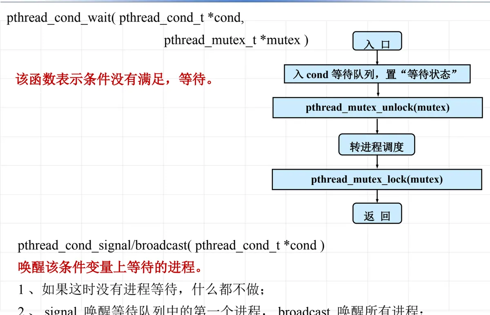
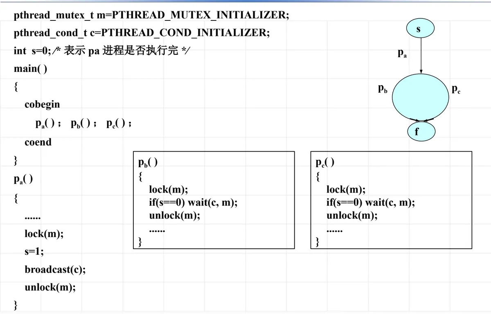
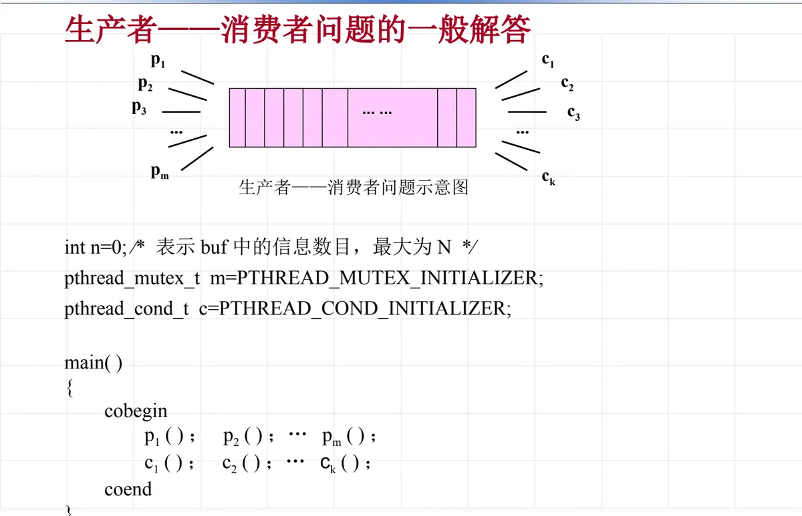

操作系统原理 · 第 4 章 进程及进程管理
4.10 线程的互斥与同步
上一节把并发的单位从进程缩小到线程，代价是同一进程内的多个线程天然共享内存，互斥与同步的问题变得更突出。这一节看 Linux 为线程提供了哪些互斥/同步手段，重点讲其中的条件变量——它怎样与一把锁配合，完成「条件不满足就等待、条件满足就唤醒」这类同步。
1. Linux 系统中的线程互斥/同步接口
在线程这一层，前面讲过的信号量 sem 仍然可以使用；除此之外，pthread 线程库还提供了一组更贴近线程的机构，按用途分成三类：
/* 自旋锁：不释放处理机，原地等待 */
pthread_spin_init/destroy( )
pthread_spin_lock/unlock( )
/* 互斥锁：等待时让出处理机 */
pthread_mutex_init/destroy( )
pthread_mutex_lock/unlock( )
/* 条件变量：等待某个条件成立 */
pthread_cond_init/destroy( )
pthread_cond_wait( )
pthread_cond_signal/broadcast( )自旋锁与互斥锁的区别，正是 4.5 节讲锁时提到的两种等待方式：自旋锁不释放处理机，反复测试锁位；互斥锁在等不到时把线程挂起、转入调度。用哪一种，取决于临界区有多长、等待会有多久。
2. 条件变量
光有锁还不够。互斥锁只能保证「同一时刻只有一个线程动共享数据」，却无法表达「数据还没准备好，我先等一等」——如果拿锁去做这件事，等待的线程会一直占着锁，别人就没法修改数据来满足条件了。为此引入条件变量（condition variable）：它经常和一个锁（pthread_mutex_t）配合使用，内部比较简单，就是一个初始状态为空的等待进程的队列。线程在条件不满足时进入该队列等待，并同时把锁放开；等到条件成立，另一个线程通过它把等待者唤醒。
条件变量的初始化有两种写法：
/* 静态初始化 */
pthread_cond_t c = PTHREAD_COND_INITIALIZER;
/* 动态初始化 */
pthread_cond_init(&c, NULL);（1）等待：pthread_cond_wait
这个函数表示条件没有满足，等待。它的调用形式是 pthread_cond_wait(pthread_cond_t *cond, pthread_mutex_t *mutex)，执行过程可以分成几步：
- 入口进入函数，把当前线程放入该 cond 的等待队列，并置为「等待状态」；
- 执行
pthread_mutex_unlock(mutex)，把锁放开——这一点很关键，只有放开锁，别的线程才能进入临界区去改变条件； - 转进程（线程）调度，处理机交给其他线程使用；
- 当被别的线程唤醒后，先执行
pthread_mutex_lock(mutex)重新获得锁，然后才从函数返回。

「等待前后各动一次锁」是条件变量最容易记错的地方：不是先加锁再等待、等待时一直持锁，而是等待期间必须把锁交出去。
（2）唤醒：pthread_cond_signal / broadcast
这两个函数的功能是唤醒该条件变量上等待的进程：
- 如果这时没有进程在等待，什么都不做；
- signal 唤醒等待队列中的第一个进程，broadcast 唤醒所有进程。
什么时候用 signal、什么时候用 broadcast，取决于「条件成立后有几个等待者可以继续推进」：只有一个时用 signal，可能有多个时用 broadcast。
3. 两个例子
（1）合作进程 pa、pb、pc 的执行次序
用条件变量重做 4.6 节那个「pa 先执行，pb、pc 才能开始」的例子。设一把互斥锁 m 和一个条件变量 c，整型变量 s 表示 pa 进程是否执行完，初值为 0。
pthread_mutex_t m = PTHREAD_MUTEX_INITIALIZER;
pthread_cond_t c = PTHREAD_COND_INITIALIZER;
int s = 0; /* 表示 pa 进程是否执行完 */
main( )
{ cobegin
pa( ); pb( ); pc( );
coend
}
pa( )
{ ……
lock(m);
s = 1;
broadcast(c);
unlock(m);
}
pb( )
{ lock(m);
if(s == 0)
wait(c, m);
unlock(m);
……
}
pc( )
{ lock(m);
if(s == 0)
wait(c, m);
unlock(m);
……
}pa 在锁的保护下把 s 置 1，然后 broadcast(c) 把所有等待者一起唤醒——这正是这里用 broadcast 而不用 signal 的原因：等待者有两个。pb、pc 都在锁的保护下检查条件，条件不满足就 wait，而 wait 会在等待期间把锁放开，让 pa 能够顺利执行到置位那一步。

（2）共享缓冲区的 cp 与 iop
再看共享缓冲区的例子：计算进程 cp 把结果送入缓冲区 buf，打印进程 iop 把 buf 中的数据取出打印。设整型变量 s 表示 buf 中有无信息，初值为 0。cp 在放入数据前要等到缓冲区为空（s == 0），放入后把 s 置 1 并唤醒对方；iop 则相反。
cp( )
{ while(计算未完成) {
计算得到一个结果;
lock(m);
while(s == 1)
wait(c, m);
将数据送到缓冲区中;
s = 1;
signal(c);
unlock(m);
}
}
iop( )
{ while(打印工作未完成) {
lock(m);
while(s == 0)
wait(c, m);
从缓冲区中取一数据;
s = 0;
signal(c);
unlock(m);
从打印机上输出数据;
}
}把两段代码对齐着读：一方「等待条件成立 → 修改共享数据 → 用 signal 通知对方 → 解锁」，另一方做的是对称的动作。这里两次都用 signal 而不是 broadcast，因为每一边至多只有一个等待者。另外要注意，判断条件用的是 while 而不是 if：被唤醒之后必须重新检查条件是否真的成立，因为从被唤醒到重新拿到锁之间，条件可能又被别人改回去了。
4. 生产者—消费者问题的一般解答
把上面的结构推广到一般情形：m 个生产者 p1…pm 与 k 个消费者 c1…ck 共享一个有界缓冲区，设整型变量 n 表示 buf 中的信息数目，最大为 N，仍然用一个互斥锁 m 和一个条件变量 c。

int n = 0; /* buf 中产品数，最大 N */
main( )
{ cobegin
p1( ); p2( ); … pm( );
c1( ); c2( ); … ck( );
coend
}
pi( )
{ while(生产未完成) {
生产一个产品;
lock(m);
while(n == N)
wait(c, m);
将一个产品放入缓冲区;
++n;
unlock(m);
}
}
cj( )
{ while(还要继续消费) {
lock(m);
while(n == 0)
wait(c, m);
从缓冲区取出一个产品;
--n;
unlock(m);
消费一个产品;
}
}与 4.6 节用信号灯写的版本比较一下：那里用 sa、sb 两个信号灯分别表示「满」和「空」的数目，这里换成了「一个计数器 n + 上下界判断（n == N、n == 0）+ 一个条件变量」。条件变量不保存状态，它只负责等待和唤醒，「现在能不能继续」这件事必须由共享变量 n 自己说清楚，这也是为什么每次被唤醒后都要重新判断条件。同时不要忘记：修改完 n 之后要用 signal(c)（或 broadcast）唤醒对方，否则等在队列里的线程永远不会被唤醒。
本节小结
- 线程可用的互斥/同步机构有三类：信号量 sem、自旋锁与互斥锁（pthread_spin_*、pthread_mutex_*）、条件变量（pthread_cond_*）；自旋锁不释放处理机，互斥锁会挂起等待者；
- 条件变量常与一把互斥锁配合使用，内部是一个初始为空的等待队列，静态初始化为 PTHREAD_COND_INITIALIZER；
- pthread_cond_wait 的流程是「入等待队列并置等待状态 → 释放锁 → 转调度 → 被唤醒后重新加锁 → 返回」，等待期间必须把锁交出去；
- pthread_cond_signal 唤醒等待队列中的第一个线程，broadcast 唤醒所有线程；没有等待者时什么都不做；
- 用条件变量做同步的固定套路是「加锁 → while(条件不满足) wait → 修改共享数据 → signal/broadcast → 解锁」，被唤醒后必须用 while 重新检查条件。